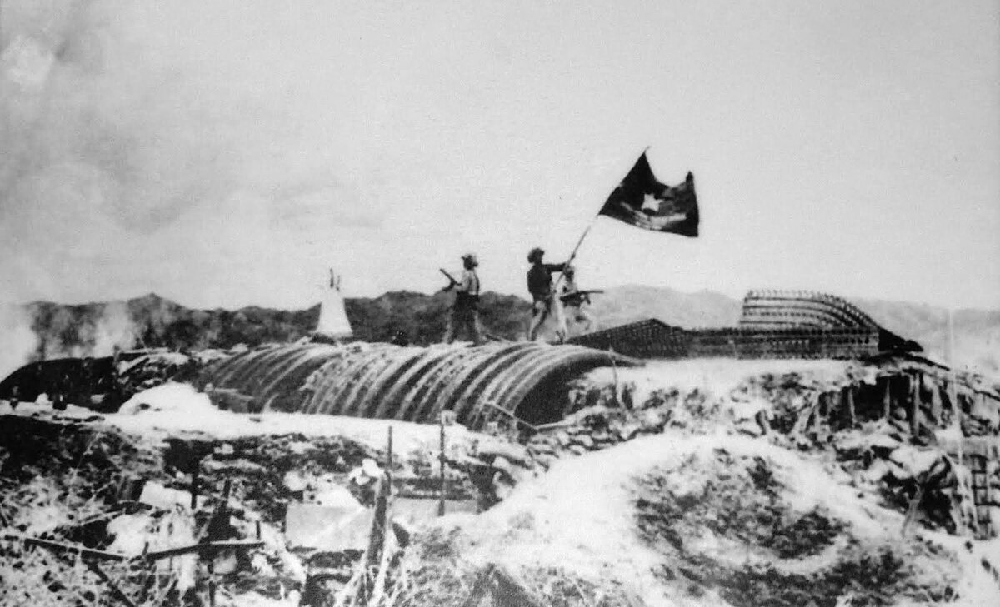

Cho đến nay, quá trình đàm phán Hội nghị Paris, ngoài tên tuổi của những nhà ngoại giao tầm cỡ như Lê Đức Thọ, Xuân Thủy, người ta vẫn còn nhắc đến bà Nguyễn Thị Bình “Madam Bình” như một nhà ngoại giao xuất sắc của Việt Nam trong thế kỉ XX
Ai có thể ngờ phía sau một tướng trận đã đi suốt chiều dài lịch sử ba cuộc chiến từ chống Pháp, chống Mỹ đến chiến tranh biên giới như thiếu tướng Hoàng Đan lại là một chuyện tình lãng mạn đến thế.
Một cuốn nhật ký được một sĩ quan quân báo Mỹ tham chiến ở chiến trường Đức Phổ, Quảng Ngãi nhặt được sau trận tập kích vào một “căn cứ của Việt cộng” đã suýt bị ném vào lửa, nhưng người phiên dịch đã khuyên anh ta “Đừng đốt, vì trong đó đã có lửa rồi!”.
Năm 1934, đám cưới của hai người đồng chí Lê Hồng Phong (Lê Huy Doãn) và Nguyễn Thị Minh Khai diễn ra đầm ấm, giản dị ở Thượng Hải (Trung Quốc). Sau khi về nước, để đảm bảo nguyên tắc hoạt động bí mật, hai vợ chồng phải xa nhau.
Chuyện tình giữa những người đồng chí cùng tham gia hoạt động cách mạng còn có chuyện của Hoàng Văn Thụ và Phạm Thị Vân (Hoàng Ngân).
Cả nước có 1.146.250 Liệt sỹ. Trong đó có 191.605 Liệt sỹ hi sinh trong kháng chiến chống Pháp; 849.018 Liệt sỹ hi sinh trong kháng chiến chống Mỹ,.....Tuổi trẻ hôm nay đời đời ghi nhớ, tri ân, biết ơn sự hy sinh của các anh hùng liệt sỹ, các mẹ Việt Nam anh hùng, các gia đình có người thân đã cống hiến sương máu, cuộc đời cho sự nghiệp cách mạng vĩ đại của dân tộc
Liệt sỹ đã hy sinh trên cả nước
Liệt sỹ vô danh
Liệt sỹ chưa tìm thấy được hài cốt
dân thường thiệt mạng
Bà mẹ Việt Nam anh hùng
người nhiễm chất độc màu da cam
Trong ký ức người Việt Nam, "nạn đói năm Ất Dậu" vẫn là một cơn ác mộng, nỗi nhức nhối khó quên. Thảm họa ấy bắt đầu từ tháng 10/1944 kéo dài đến giữa năm 1945.
Xem thêmTrong cuộc kháng chiến chống thực dân Pháp xâm lược (1945 - 1954), chiến thắng Việt Bắc Thu - Đông 1947 là một trong những sự kiện lịch sử có tầm chiến lược, tác động tích cực đến tiến trình cuộc kháng chiến của nhân dân Việt Nam.
Xem thêm